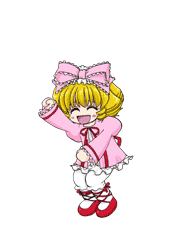

feliz 1 mes :) 
Onde nos conhecemos: The Corner
Eu nunca soube como te chamar... Eloise ou Yuna? Mas Yuna é o nome que mais te chamo, então é assim que vou te chamar aqui. 💕
Você é a rosa que floresceu no meu mundo escuro. Observadora, única, engraçada, misteriosa, intensa. Você é a minha luz, minha surpresa, minha inspiração.
Mesmo te observando por um mês, nunca imaginei que você viria até mim. E veio. E mudou tudo. Você me fez falar sobre meu lado sombrio, me fez rir, me fez sentir vivo.
Você se cobra demais, mas não percebe o quanto é incrível. Sua gentileza, seu dom, sua risada, seu jeito especial... tudo em você é raro.
Eu te vivo, Yuna. Sei que é bobo, mas é real. Você é minha rosa em meio às cinzas, minha melhor escolha, minha primeira vez em tudo que é bom.
Obrigado por me mostrar que posso confiar, que posso ser eu mesmo. Você é meu segredo mais bonito.
Você é a primeira a me fazer coisas que nunca faria por ninguém. Você é minha maior sorte.
Quando penso no futuro, a imagem sempre tem você — rindo numa tarde qualquer, comendo sushi na ponta dos palitos ou dividindo um açaí. Não preciso de cenas perfeitas, só da sua companhia ao meu lado.
Gosto do jeito que você me chama, do seu entusiasmo quando algo te anima e até das suas manias mais estranhas — todas elas me conquistam, uma por uma.
Quando te vi pela primeira vez, foi como achar a solução para um bug que eu já vinha procurando: tudo fez sentido de repente e até meus erros de código pareceram menos assustadores. kkkk
Amo quando a gente fica horas em chamada mesmo sem falar muita coisa — aquele silêncio confortável que diz mais que mil palavras. Perdão pelo meu silêncio às vezes, eu às vezes travo e fico pensando demais, mas sempre tô aqui.
Amo ouvir suas gargalhadas quando jogamos, quando você ri alto e eu me pego rindo junto sem saber direito do quê — esses momentos são meus favoritos.
Às vezes eu escrevo coisas bobas no meu telefone só pra lembrar depois, e percebo que quase tudo que eu quero é dividir pequenos instantes com você: uma série como YOU, o silêncio confortável entre nós, em algum jogo, em qualquer momento
Não prometo ser o melhor em palavras todos os dias, mas prometo tentar com gestos. Prometo te ouvir com atenção e estar quando você precisar. Prometo rir das suas piadas (até das piores).
Se um dia a insegurança bater, lembre-se desta página: alguém que percebe seus detalhes, que acha você linda em silêncio e que prefere ficar do seu lado do que qualquer lugar do mundo.
Quero colecionar lembranças com você — fotos tortas, playlists estranhas, bilhetes perdidos. Quero transformar o nosso cotidiano em algo só nosso, simples e verdadeiro.
Eu não tinha nenhum medo de morrer, e
na verdade, não tinha nem porquê. Eu achava que
se eu morresse, pra mim tudo bem, deixa pra lá,
não importa agora.Mas aí, eu conheci uma mulher, e tudo mudou,
comecei a sentir que queria viver. E pela primeira
vez, a ideia da morte começou a me assustar
mi amor por ti <3
Protección IV
Irrompibilidad III
Lealtad III
Infinidad
Poder V
Obrigado por chegar. Obrigado por ficar. E se algum dia eu esquecer de dizer, que estas linhas me lembrem: eu te escolho, Yuna, hoje e sempre.
✨
Eu finalmente entendo o que “eu te amo” significa.
Violet Evergarden • Violet
Eu sou tão feliz... só porque você está aqui.
Clannad • Nagisa
 GIF
GIF
Eu consegui viver dentro do seu coração?
Shigatsu wa Kimi no Uso • Kaori
Em qualquer mundo que fosse, eu ainda me apaixonaria por você.
SAO • Asuna
 GIF
GIF
Eu te dou metade da minha vida, então me dá metade da sua!
FMA • (Edward & Winry)
Não importa quantas cicatrizes eu ganhe, eu vou proteger os laços que eu amo.
Kimetsu • Tanjiro
Eu queria te dizer... onde quer que você esteja, eu vou te encontrar de novo.
Kimi no Na wa • Mitsuha
Obrigada... por ter nascido.
Fruits Basket • Tohru
Eu amo você... então por favor, seja feliz para sempre!
Anohana • Menma